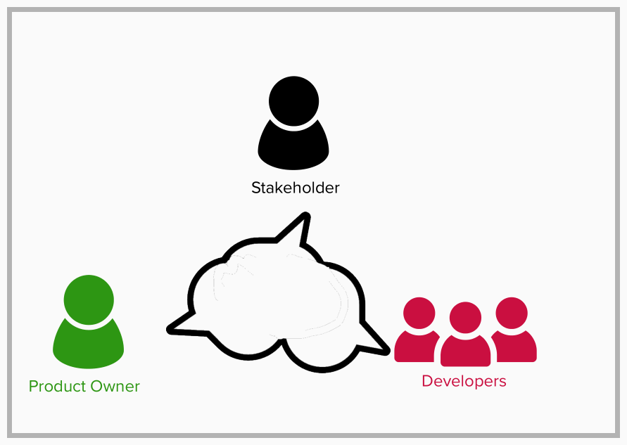
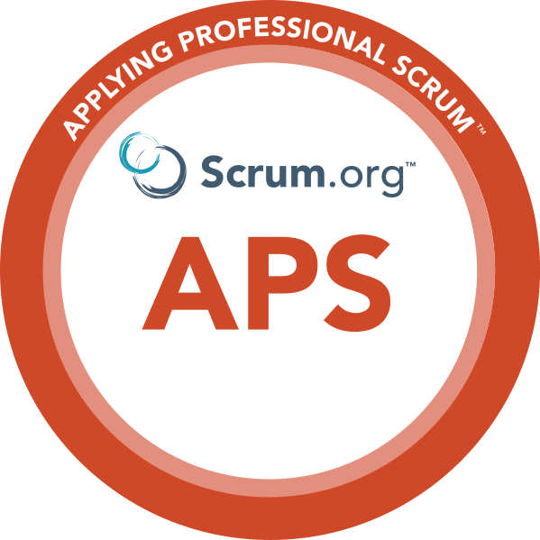

Charting Your Pathas a Business Analyst@ReadySetAgile |
|
John Riley · Principle Agile Coach and Trainer · Ready Set Agile
|

|
### Connections
---


## Goal for Today
---

Define a Business Analyst in 2025 and beyond!
### Sections of our discussion
---
- Understanding the Current Landscape
- Identifying Key Skills and Competencies
- Future State of a Business Analyst
- Your Turn
### Understanding the Current Landscape
---
| Format: | Shift and share |
| Objective: | Refine topics related to the current landscape of business analysis |
| Goal: | A shared understanding of the current landscape |
| Time: | 20m |
### Skills and Competencies
---
| Format: | World Café |
| Objective: | small group discussions that rotate, allowing participants to build on each other's ideas. |
| Goal: | A shared understanding of the skills needed to be a Business Analyst in 2025 |
| Time: | 15m |
#### Future State of the Business Analyst Hero
---
| Format: | 1-2-4-All |
| Objective: | participants first think individually, then discuss in pairs, followed by small groups of four, and finally share insights with the entire group. |
| Goal: | A shared understanding of the Business Analyst behavior beyond today |
| Time: | 22m |
### Conclusions
---
Final Thoughts
- Careers are evolving, but the need for Business Analysts is crutial
- Human skills bring purpose and connection with specific business
- A mentor, coach, or career partner is a big help!
- Seek mastery, learn with purpose, not just for a checkbox or a certificate
#### Creating a Common Language for High-Performing Teams
---

Learn some tools and techniques to develop a team’s common language,
and how this language helps a team create artifacts. Some of these artifacts include Product Goals,
team agreements, and Product Backlog Items.
www.readysetagile.com/events
#### Applying Professional Scrum
---

Applying Professional ScrumTM (APS) is a hands-on,
activity based course in which students experience how Professional Scrum and the Scrum framework improve their ability to deliver value compared to traditional methods. Scrum provides a better way of working that highlights the use of experimentation, incremental delivery of customer value, frequent feedback loops and the fostering of strong team dynamics.
Discount code: IIBA15
#### Professional Scrum Product Owner
---

The 2-day Professional Scrum Product Owner™ (PSPO) is a hands-on, activity-based course where students explore how Product Ownership is crucial to the success of a product.
Throughout the class, students learn a number of practices that they can use once they leave the classroom.
Discount code: IIBA15
### Thank you!
---

John Riley
 https://www.linkedin.com/in/johril/
https://www.linkedin.com/in/johril/ john@ReadySetAgile
john@ReadySetAgile